AdGuardHome
作用：广告过滤，恶意域名阻断，提升 DNS 稳定性
OpenWrt设置
网络>DHCP/DNS>设置及端口>DNS 服务器端口设置为5353
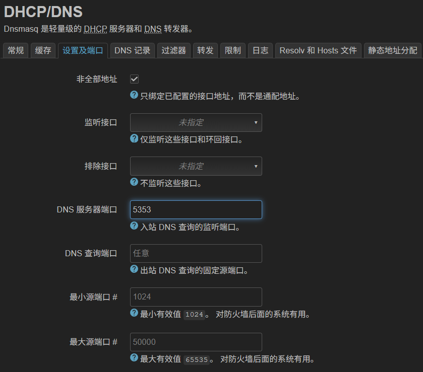
网络>接口>LAN>DHCP 服务器>高级设置>DHCP 选项设置为6,路由器LAN口地址
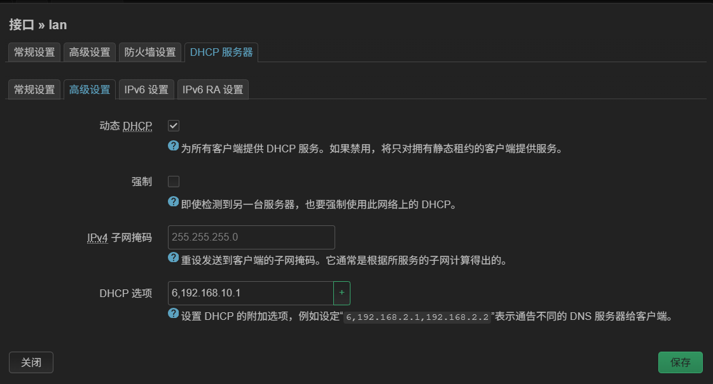
在软件包里搜索 adguardhome 安装
AdGuardHome配置
访问http://路由器IP:3000，WEB端口设置成3000，监听端口设置成53，接着按照提示进行设置，直到进入主界面
默认 53 端口由 dnsmasq 占用，上一步已将其改为 5353，释放了 53 端口。由于 DHCP 已向客户端下发 192.168.10.1 作为 DNS 服务器地址，客户端的 DNS 请求会发送至路由器 53 端口，因此由 AdGuardHome 处理
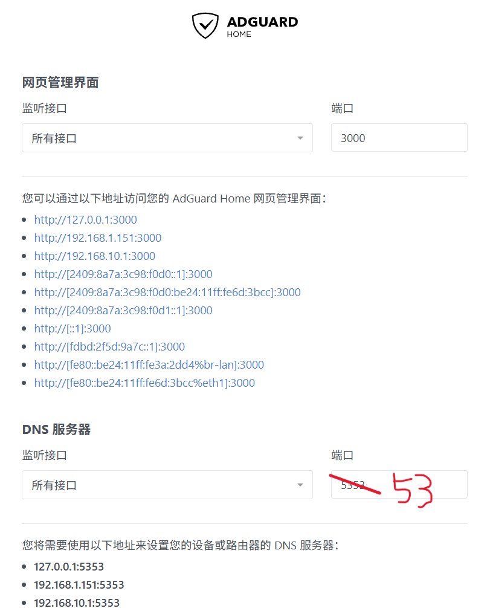
进入设置>DNS设置>上游DNS服务器，更改服务器地址
上游DNS服务器是AdGuard Home查询的服务器，设置几个最快的公共DNS服务器。这里建议使用DoH/DoT加密的DNS，不然DNS依旧会被污染和劫持
|
|
接着点击测试上游DNS，成功后右下角就会出现提示，测试完成之后点击应用
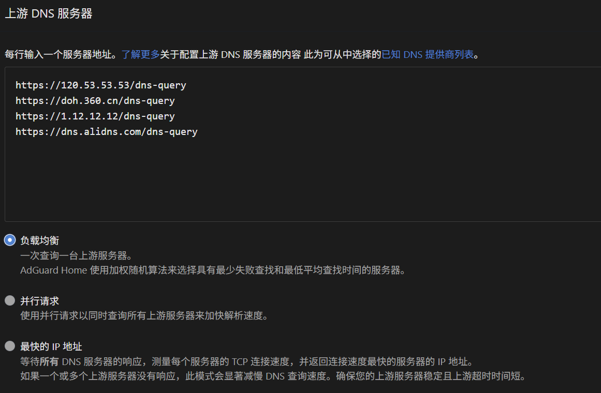
-
Bootstrap DNS 服务器的作用只是解析上游 DoT/DoH 技术 DNS 服务器的域名，所以建议改成本地运营商DNS
-
速度限制建议设置为0
-
启用 EDNS ：有助于获取到更合适的 CDN IP地址，建议勾选
-
启用 DNSSEC : 用于校验 DNS 记录的签名，防止 DNS 缓存被投毒，建议勾选。勾选后会在日志页面请求列显示小绿锁图标
-
禁用 IPv6 ：丢弃 IPv6 的 DNS 查询。在本地网络和网站都支持 IPv6 会优先使用 IPv6 去访问网站，但大多数地区的 IPv6 网络体验都一般。还有一些代理软件对 IPv6 支持不佳，如果没有特殊需求，勾选即可
-
DNS缓存配置根据自己设备配置来，空间足够的可以设置大一点，勾选乐观缓存
刷新AdGuardHome仪表盘页面，收到DNS查询说明配置成功
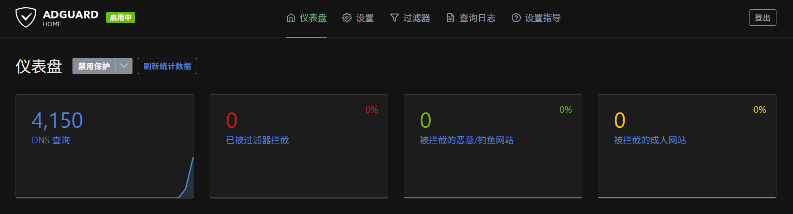
DNS黑名单
可以挑选下面的规则加入，不建议添加过多，会影响解析速度，够用即可
- EasyList：去除国际网页中大多数广告，包括不需要的框架、图像和对象
- EasyList China：EasyList针对国内的补充规则
- EasyPrivacy：从网络上完全删除所有形式的跟踪，包括Web错误、跟踪脚本和信息收集，从而保护个人数据
- Anti-AD：目前中文区命中率最高的广告过滤列表，实现了精确的广告屏蔽和隐私保护
- halflife：合并自乘风视频广告过滤规则、Easylist、EasylistChina、EasyPrivacy、CJX’sAnnoyance，以及补充的一些规则 桌面端 移动端
- ADgk：适用于 AdGuard for Android 的去广告规则
- 百度搜索优化：搜索结果内屏蔽百家号
- i-dont-care-about-cookies屏蔽网站的 cookies 相关的警告
- 知乎过滤器 严格版 —— 去除开屏、时间轴、首页推荐、回答列表、回答底部及评论区广告，个人中心VIP横幅
- CJX’s Annoyance List：过滤烦人的自我推广，并补充EasyPrivacy隐私规则
如果有特殊屏蔽或者放行需求，可以在自定义规则中添加，至此AdGuardHome就可以正常使用了
ZeroTier
作用：创建虚拟局域网，用于远程设备互联
创建虚拟局域网
在ZeroTier官网上注册账号，然后创建一个虚拟网络
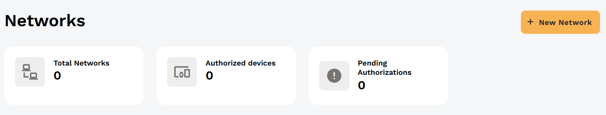
记住设置中显示的Network ID
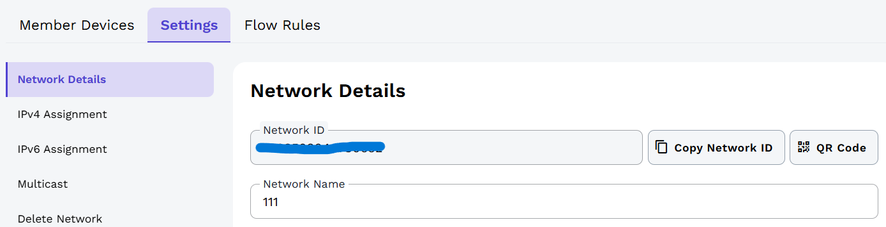
OpenWrt配置
包管理器安装zerotier
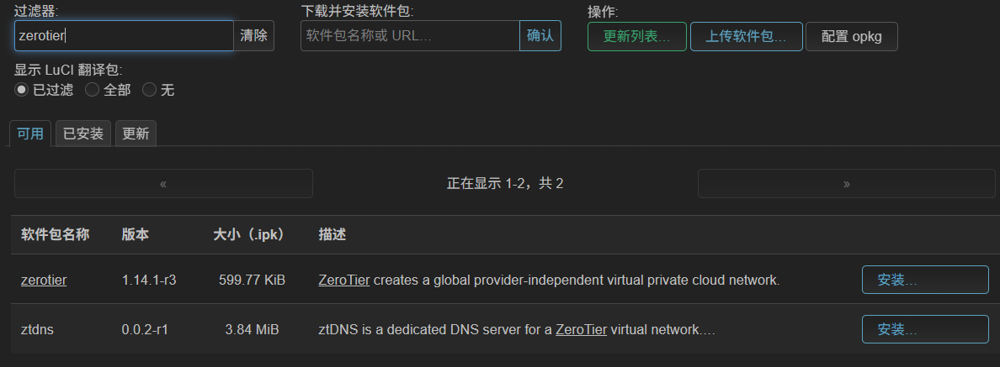
终端运行下面的命令
|
|
在网络>接口>添加新接口中按照图片进行设置并创建
这里一定要选择不配置协议，很多教程写的是DHCP客户端协议，实测配置完成无法正常使用
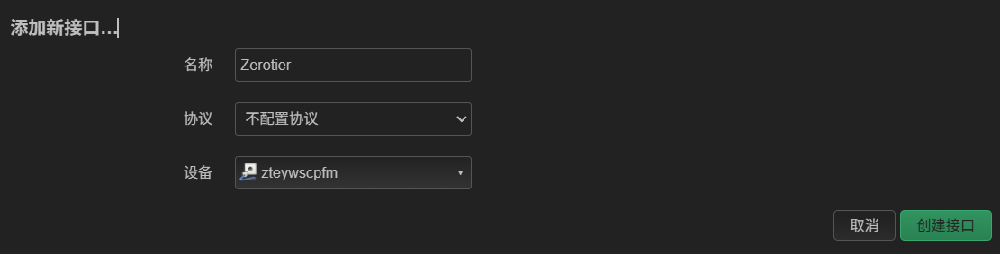
在网络>防火墙>常规设置>区域中点击添加，如图进行设置后保存
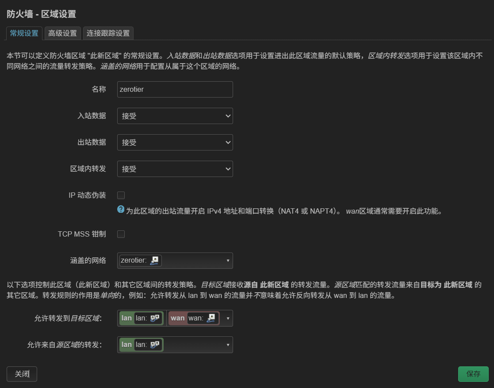
回到网络>接口，点击编辑刚刚创建的接口，在防火墙设置中分配防火墙区域
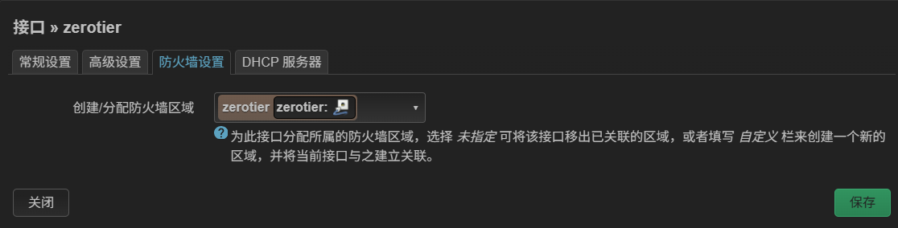
添加设备
OpenWrt终端输入下面的指令，将xxx替换为自己的Network ID
|
|
Android下载ZeroTier One应用，进入Add Network，输入Network ID加入虚拟网络
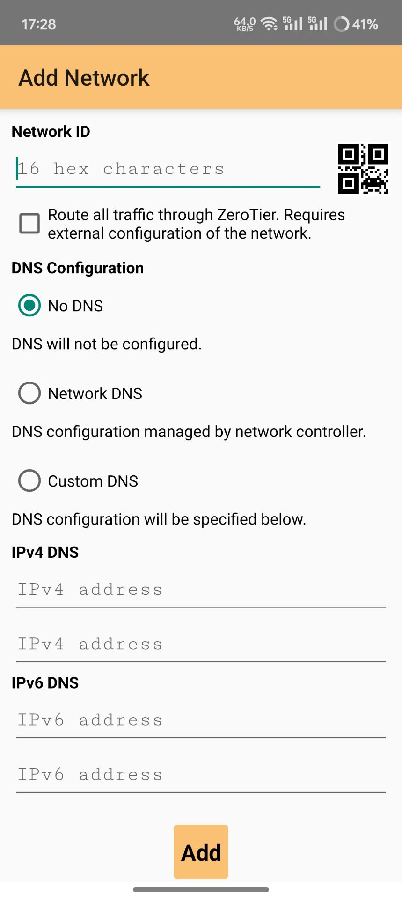
回到官网，发现弹出了设备的加入申请，通过即可
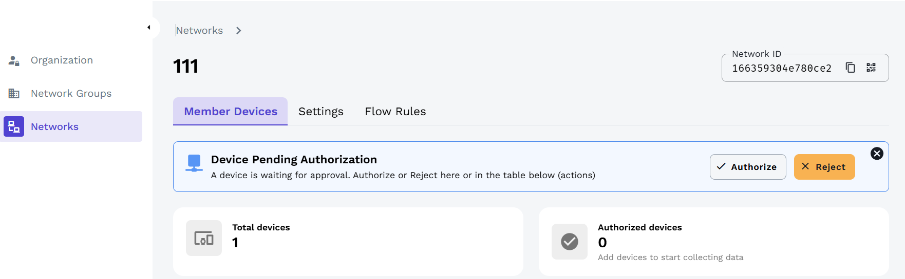
将需要的设备加入后，互相ping发现能ping通（虽然延迟感人），说明配置成功
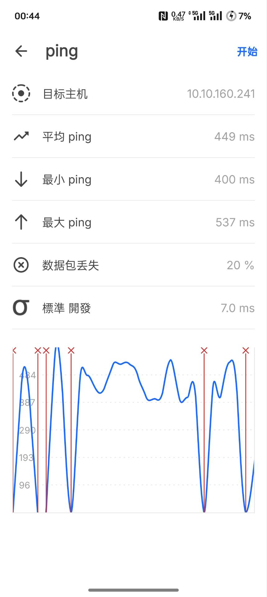
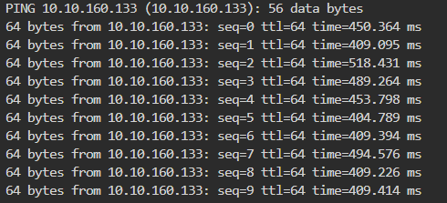
延迟大的原因分析
查看网络信息，可以看到当前设备加入的 ZeroTier 网络信息，意思是 OpenWrt 已经成功加入了一个名为 111 的私有 ZeroTier 网络，分配到的虚拟 IP 是 10.10.160.241，网络正常
|
|
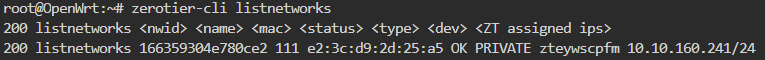
查看peers，从官网中可以知道775372d612 是我设备的ID，状态是 RELAY，延迟 -1，说明我要通信的设备目前不能直连，只能通过 ZeroTier 的中继服务器转发。ZeroTier的中继服务器在国外，这也是延迟极大的原因
|
|
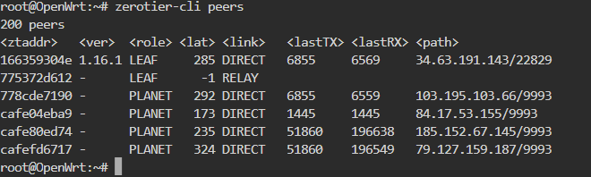
ZeroTier默认使用UDP 9993端口通信，如果路由器或上级网络限制UDP 9993，在复杂网络环境下就会自动切到中继模式，因此需要手动放行该端口
进入网络>防火墙>通信规则，添加一条新的规则，设置如图
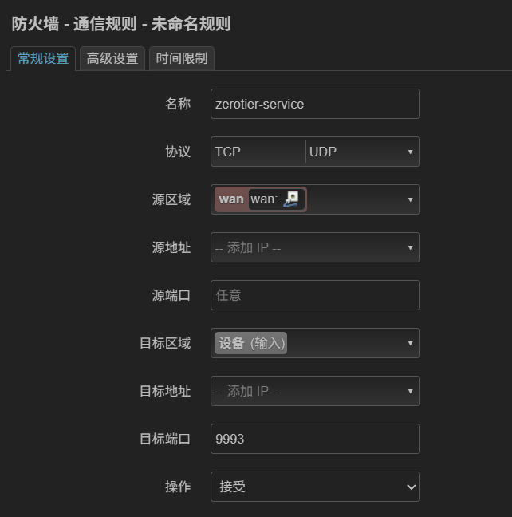
如果还是没有效果，大概率是NAT类型或运营商限制导致无法打洞成功，需要另找方法
访问局域网设备（不可用）
ZeroTier虚拟网络里有多台设备，其中一台是路由器，路由器下还有电脑等局域网设备，我希望其他ZeroTier节点可以访问路由器下的局域网设备
这一步需要在官网配置Managed Routes，将路由器LAN网段设置为由路由器虚拟IP转发，这时我注意到根本没有这一选项，在之前的配置过程中也有大量和教程不同的地方
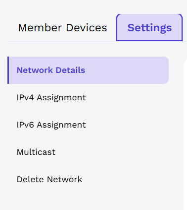
在官方文档搜索Managed Routes并跳转后，发现我访问的是https://central.zerotier.com/，有高级设置的是https://my.zerotier.com/。官方在2025年11月更新了控制面板，新平台将部分高级网络功能纳入付费套餐，现在需要花费18美元才能有这类功能。新版创建的网络不会在旧版管理界面显示，控制面板不互通，就算创建一个新的老版局域网，相信过不了多久也会没有办法使用。因此我选择放弃这个方案
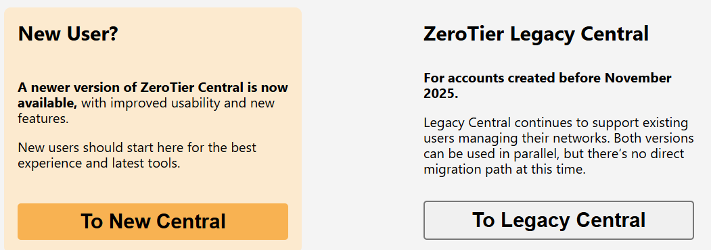
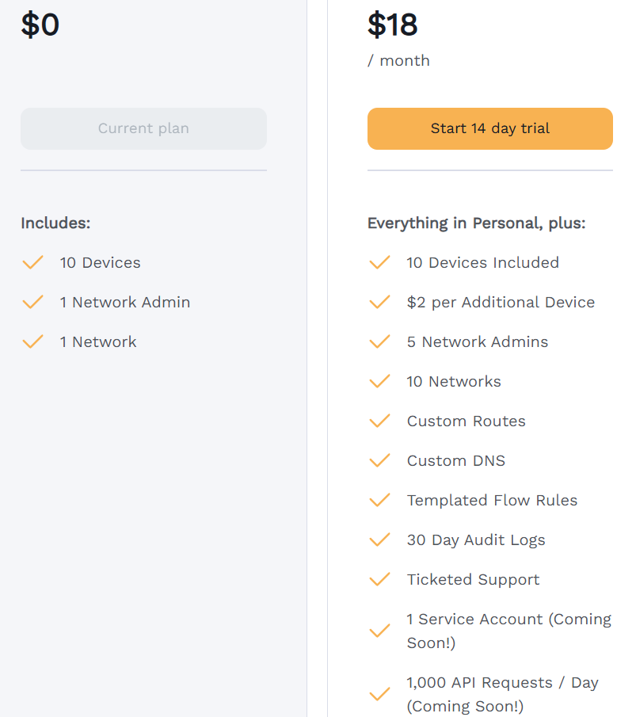
最终我选择使用ZeroTier远程 SSH 访问路由器，而内网设备则通过皎月连来串流
Wake on Lan
作用：远程开机，方便在外访问主机与串流
目标主机需要提前开启WOL功能，参考WOL基础配置进行设置
连接
OpenWrt进入系统>管理权>SSH访问，进行如下设置
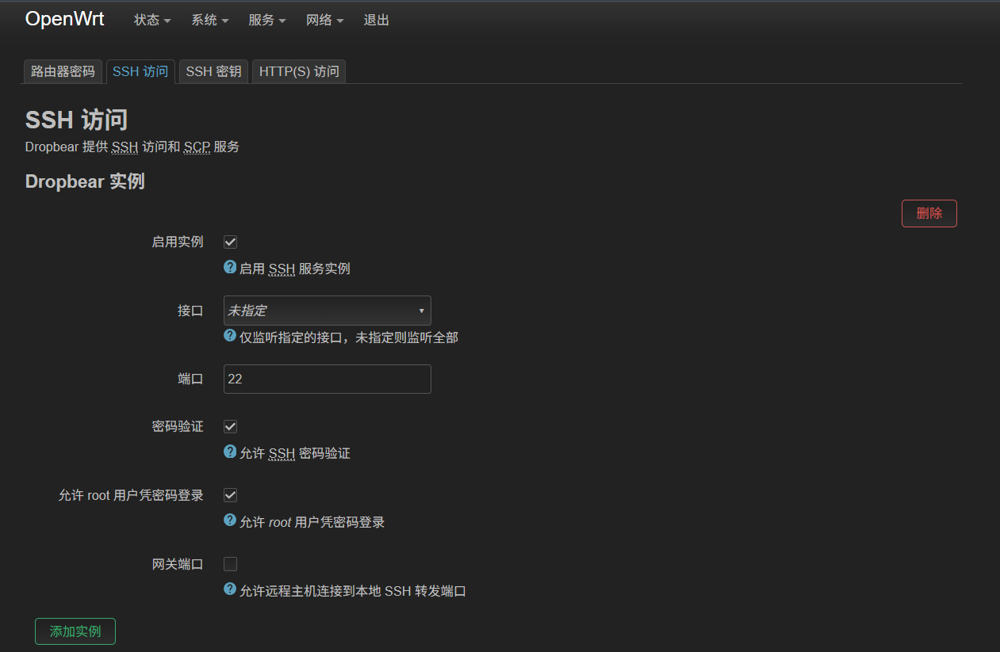
我使用的是安卓手机远程开机，手机安装ConnectBot，根据上一章配置好ZeroTier，然后手机加入虚拟局域网
在ConnectBot的添加设备界面填写信息并添加
|
|
username即设备的用户名 hostname为虚拟局域网给OpenWrt设备分配的IP地址
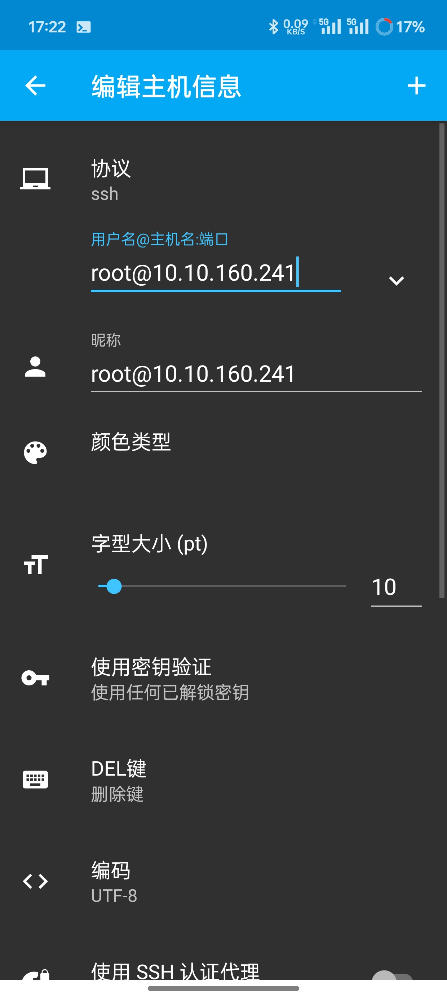
然后输入密码即可登录到路由器后台
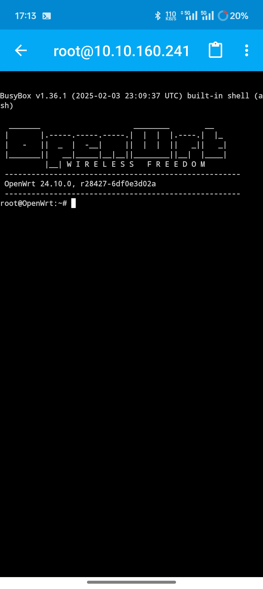
唤醒
OpenWRT官方提供了两种唤醒工具，wol 和 etherwake，二选一即可
opkg安装etherwake，或 luci-app-wol 软件包和 luci-i18n-wol-zh-cn 语言包
SSH输入下面的命令来唤醒目标主机
wol： /usr/bin/wol -i <目标主机所在局域网的广播地址> <目标机网卡MAC地址>
|
|
etherwake： /usr/bin/etherwake -b <目标机网卡MAC地址> -i <路由器网卡名称>
|
|
这时即使我手机使用的是移动网络，也可以让电脑开机了
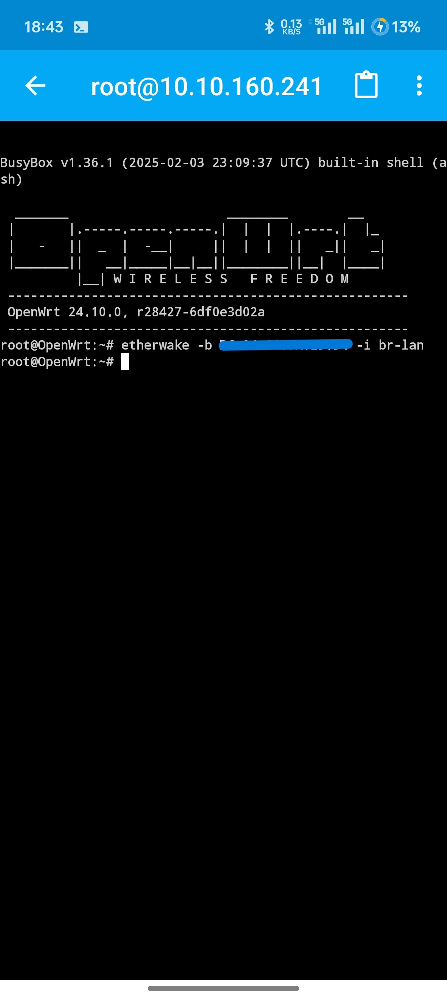
OpenClash
作用：科学上网
安装
OpenWrt进入系统>软件包卸载原来的dnsmasq。因为 OpenClash 依赖的是功能更完整的 dnsmasq-full，两个软件包提供相同的文件，不能同时存在，opkg 会阻止直接覆盖安装
进入软路由终端，复制下面的命令安装OpenClash需要的依赖包。我的系统是 OpenWrt 24.10，这一版本默认使用 firewall4，其底层基于 nftables，因此需要安装 nftables 相关依赖
|
|
|
|
OpenWrt进入系统>软件包>上传软件包，将刚刚下载的软件包上传并安装
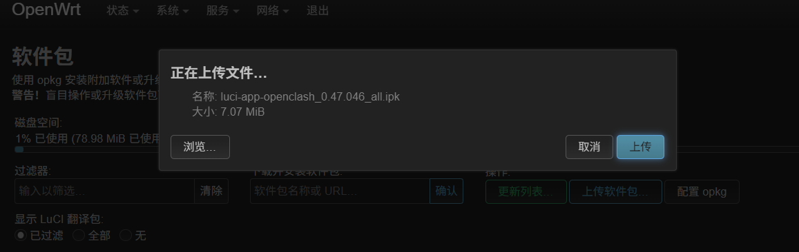
可能的报错：无法执行 opkg install 命令：Error: XHR request aborted by browser
原因：在 OpenWrt 或 ImmortalWrt 的 LuCI 后台安装软件包时，如果安装过程较长或网络延迟较高，浏览器端可能因为 XHR 请求超时而中断请求。此时页面会提示安装失败，但实际上后台的 opkg 进程可能仍在继续运行并完成安装。等待一段时间后重启路由器，通常可以看到 OpenClash 已经安装完成
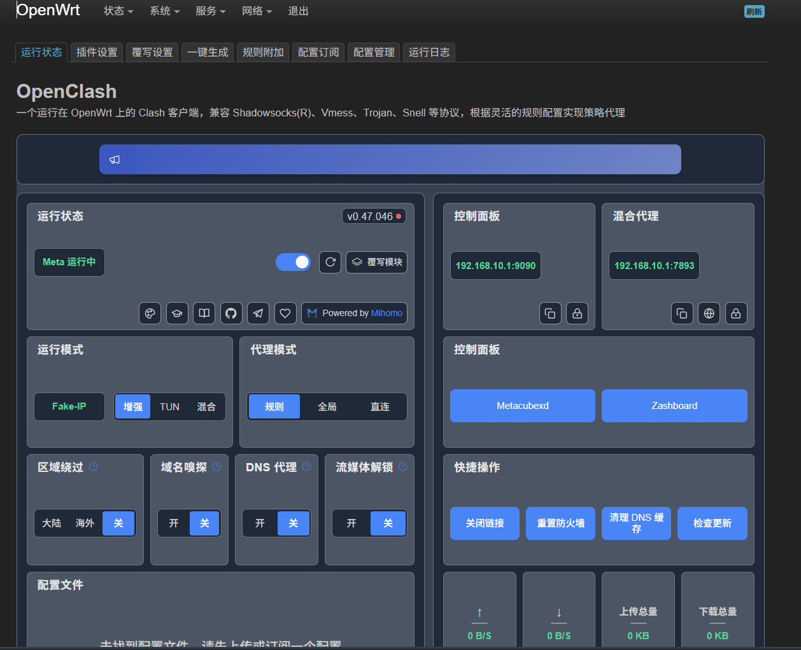
配置
进入系统>服务>OpenClash，这里提示内核未安装，选择一个可访问的下载源安装即可
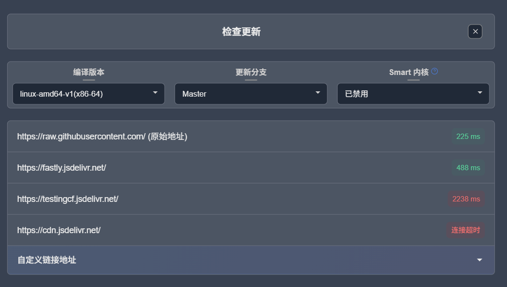
添加机场的订阅文件，复制链接导入
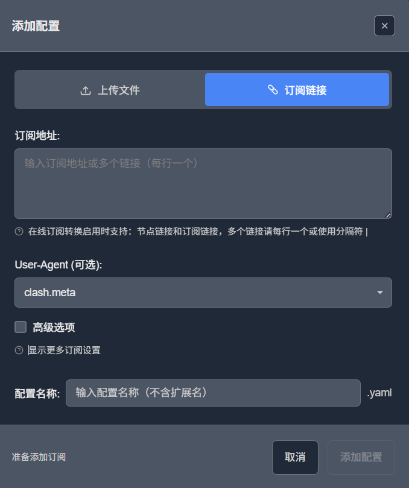
进入OpenClash>插件设置>模式设置，点击切换页面到Fake-IP模式
Fake-IP 是 Clash 推荐的 DNS 工作模式，能够提高分流效率并减少 DNS 污染问题
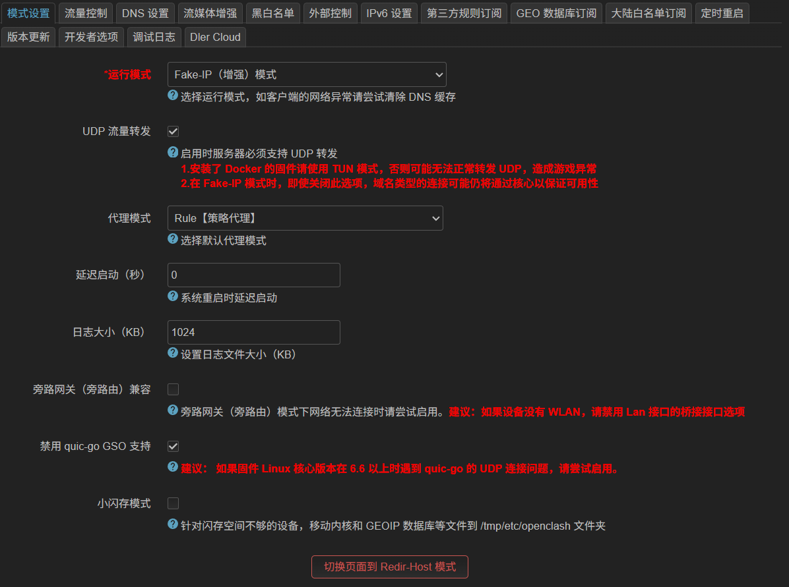
建议启用绕过中国大陆区域IP，以减少直连流量进入内核带来的性能损耗，进入流量控制进行如图设置
启用后，GeoSite 数据库中分类为 CN 的域名，且解析 IP 位于中国大陆 IP 段范围内的流量，将不进入内核
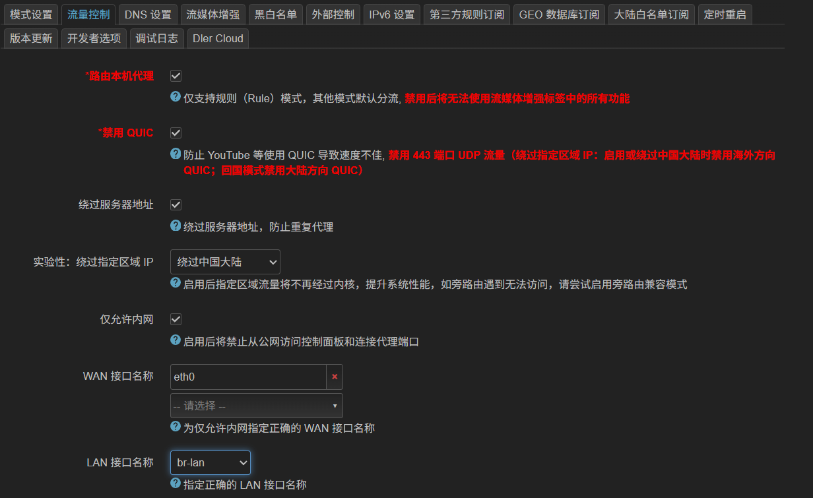
进入GEO数据库订阅，勾选自动更新 GeoIP MMDB 数据库、自动更新 GeoIP Dat 数据库、自动更新 GeoSite 数据库
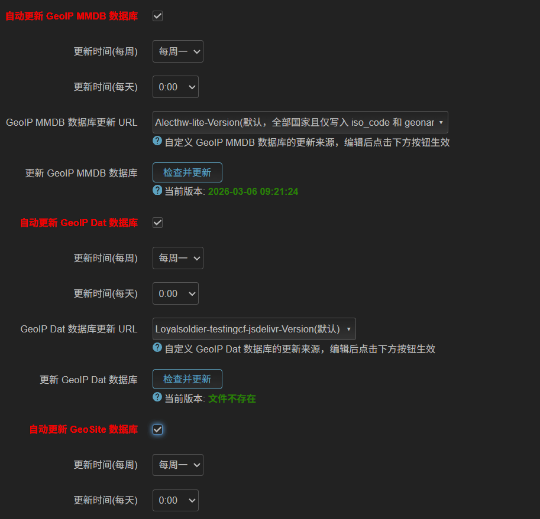
大陆白名单订阅中用于直连分流的 IP 白名单必须保持更新，按照图中设置即可
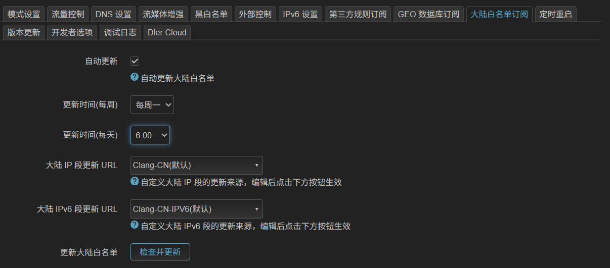
版本更新建议选择 master 版本，稳定性最佳。然后点击下方的检查更新，将内核和主程序更新为最新版
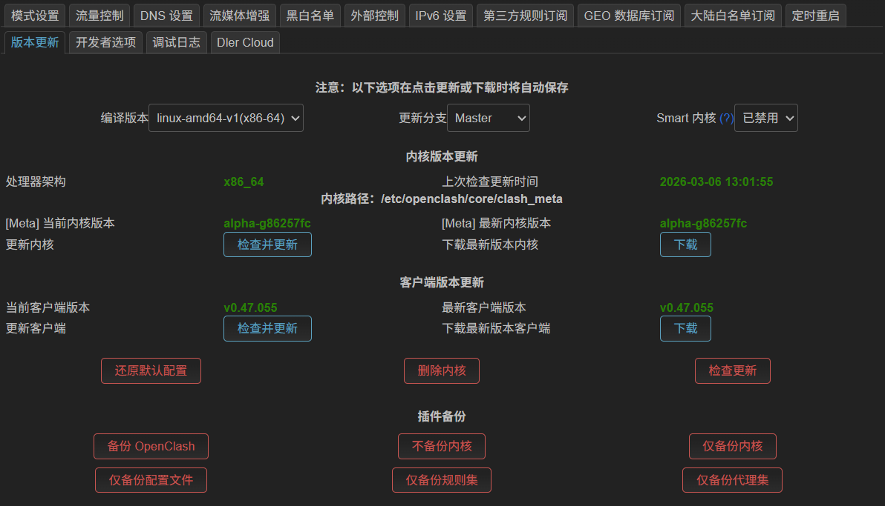
最后更新配置并启动，查看日志发现启动成功，说明配置完成，之后可以通过运行状态>控制面板来管理OpenClash
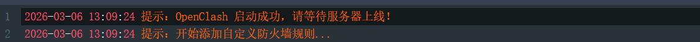
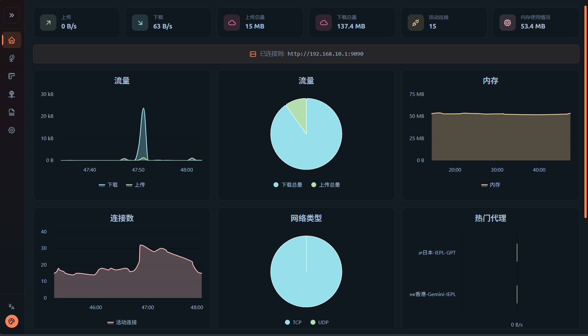
以上是最基础的设置，如果需要更复杂的设置可以参考Home · vernesong/OpenClash Wiki这个教程，写的非常详细明了
其他
luci-app-ttyd：模拟终端，可以直接在浏览器里面使用 SSH 进入路由器后台luci-app-filebrowser：可以对文件进行管理luci-app-nlbwmon：网络带宽统计curl：命令行网络工具，用来和服务器进行数据交互
参考
2024最新:原版OpenWrt安装AdGuard Home - 哔哩哔哩
OpenWrt 保姆级AdGuard Home 设置广告拦截＆加快DNS解析网页秒开 - 知乎
软路由：AdGuardHome + OpenWRT 让你家的网络无广告&无跟踪_adguardhome规则-CSDN博客
OpenWRT使用ZeroTier来实现异地组网的方案 - MinMin的鸽子窝
openwrt原版系统安装zerotier，私有化planet，网段互通 - 大宋666 - 博客园
openWRT路由器使用WoL唤醒Linux主机 - 苍凉温暖 - 博客园